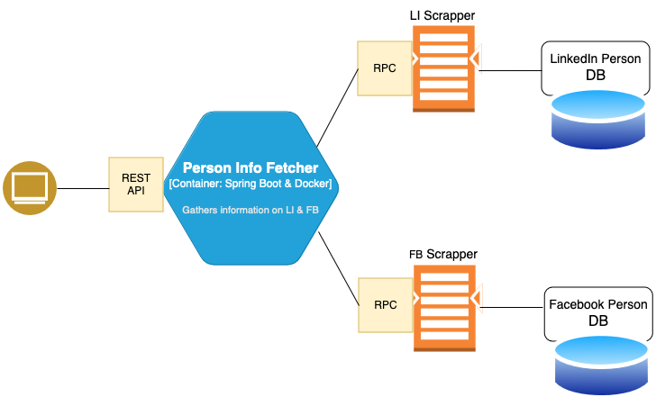

Software Design Document
Introduction
Purpose of the document
This document service as a blueprint of Poirot capstone project. It provides a solution for collecting person's information based on open source resources.
Scope of the project
A project exposes REST APIs for getting input from the researcher, exposes REST API to get collected data, performs person of interest searches on LinkedIn and Facebook social networks without requiring to be logged in or having application tokens. Searches done anonymously.
Intended audience
Any researcher who fights with misinformation and the spreading of fake news.
Project Overview and Goals
A projects helps to the researches to gather information about person of interest. It helps to fight with spread of fake news or disinformation.
A project uses: Java 17, gradle as a build tool, dockerd, Spring Boot framework, MongoDB as document database. Project length is about two month.
Milestones
Week 1 - Definition of problem
Week 2 - requirement gathering
Week 3 - requirement and resource analysis
Week 4 - Software Design Document
Week 5 - Implementation
Week 6 - Testing, Final Polishing, finalization of documentation
System Functionality
Rest Controller - exposes REST APIs
- GET /linkedin/persons
- POST /linkedin/persons
- POST /facebook/persons
- GET /facebook/persons
Services
- LinkedIn service - provides functionality for making LinkedIn searches and gathering relevant information.
- Facebook service - provide functionality for making Facebook searches and gathering relevant information.
Repositories
- LinkedIn repository services as an interface for making common operations related to mongoDB
-
Facebook repository services as an interface for making common operations related to mongoDB
-
MongoDB - persists collected data, runs as a microservice, docker container.
-
Facebook-Scrapper-Page - performs facebook scrapping pages. Runs as a docker container.
Architectural Design
provides a blueprint of the system’s structure.

Communication types:
Client (a browser) communicates with a Service (Poirot) via HTTP synchronous protocol. A client sends request to the server and waits for the response.
We may to use asynchronous protocol, for example AMQP however it is a more complicated and due to the time constraints we are not going to use it.
Our application separated on two different microservices: a main one - Poirot and second one - mongo db server.
Microservices helps to divide monolith application into separated and manageable services. As benefits, it gives us: scalability, maintainability and flexibility. Each service becomes more small and easier to deploy, independently. For example, if we fixed a bug in Poirot, we do not need to redeploy mongo server. It also reduces deployment time, make fault recovery more robust. Another benefit is a testing. Becasue to the nature of microservices the can in less effort test more efficiently.
However, it is also adds overhead representing kind of disadvantages. For developer, it represents a difficulty to debug system. In case of many microservices it is challenging to get and synchronise logs from them. Data also can be out of consistency, management and integrity. To test single microservice is easy, however to test end two end becomes a challenge.
Detailed Design
Rest controllers
- PersonalInformationFetcher - exposes REST API to get input from the user.
The payload is a json, PersonInfoRequest
{
"firstName":"Jon",
"lastName":"Snow",
"email":"jon.snow@gameofthrones.com",
"phone":"(666) JON-RAVEN",
"location":"Westeros"
}
- Services
LinkedInOps - firstly, performs a search query on DDG (duckduckgo), "site:Linkedin.com 'Jon Snow'". It takes only 5 top results. This parameter is in Constants, representing a limit. Can be changed. Once a result is gotten, it starts a LI personal information scraping. It uses available public LinkedIn profiles. If it is not available we get HTTP status - 999. It means that request is denied. The possible solution is to use "https://translate.yandex.com/translate", in current implementation it won't be implemented. When information is received LinkedInPerson.java it transformed to DMO (Data Model Object) and saved into database as a document.
- Database layer - repositories
Spring Boot CRUD Repository abstracts database operations layer and makes its easier to make operations like: Update, Read, Create or Delete.
- To gather facebook user profiles we create a docker container with python fb page scrapper As a mongodb runs as separate docker container, our python facebook scrapper will run also as separate docker container. In order to run python scrapper we create Java process which will run 'docker exec 6ffda86269fa ulimit -a' and then grab the output which is as a json file and handle it and save into facebook collection. However, only public profiles can be scrapped.
Each module or component should have its own subsection, explaining its purpose, functionalities, and internal workings. Include class diagrams, sequence diagrams, and other relevant technical drawings.
References:
Editorial Team. (n.d.). Software design document: What is it & how to create it! (template included). BIT.AI Blog. https://blog.bit.ai/software-design-document/
James Montemagno (April, 2022). Communication in a microservice architecture https://learn.microsoft.com/en-us/dotnet/architecture/microservices/architect-microservice-container-applications/communication-in-microservice-architecture
Atlassian Blog - Advantages of microservices and disadvantages to know https://www.atlassian.com/microservices/cloud-computing/advantages-of-microservices